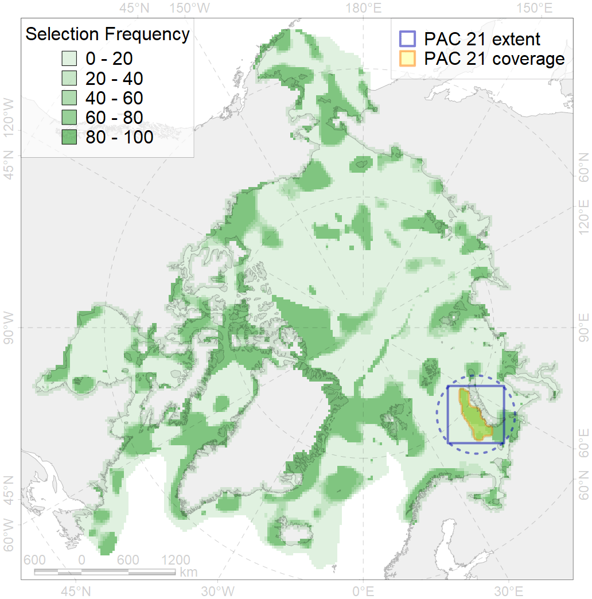
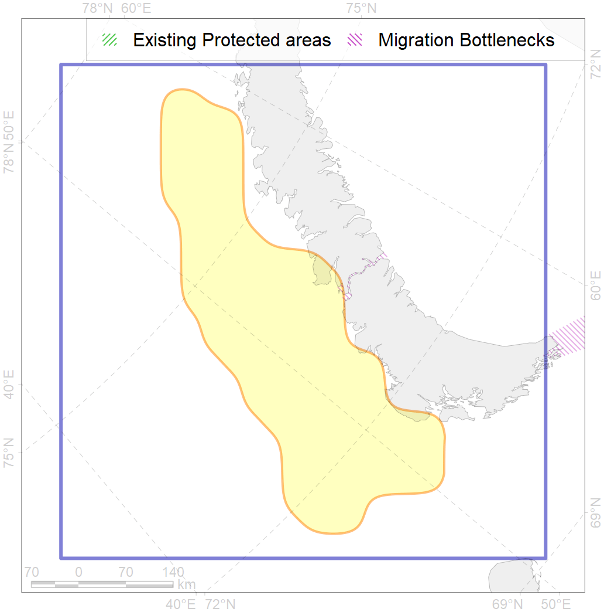

21
For more information regarding this PAC and to conduct custom spatial analysis using the PAC data or any spatial query, please consult Accenter.

0
CFs entirely within the PAC area
7
CFs at least 25% within the PAC area
8
CFs with at least 50% of their target achieved in the PAC
21
CFs with at least half of their target achieved in the PAC
| CF ID | CF Name | Proportion in the PAC | Conservation Target | Contribution to ArcNet Target Achievement | PAC’s Contribution to the Achieved Target |
|---|---|---|---|---|---|
| 7255 | Goose Bank | 76.3% | 70.0% | 99.7% | 91.6% |
| 7254 | Novaya Zemlya Bank | 71.3% | 70.0% | 96.5% | 95.8% |
| 6032 | Little auk (Alle alle alle) breeding colonies in Novaya Zemlya | 57.1% | 54.0% | 105.8% | 96.4% |
| 6092 | Little auk (Alle alle alle) breeding colonies in Novaya Zemlya buffer feeding area | 55.0% | 36.0% | 141.1% | 91.4% |
| 3119 | Polynyas distribution in the Western Novaya Zemlya region | 45.0% | 12.0% | 325.9% | 63.1% |
| 4040 | Larvae distribution of the Polar Cod (Boreogadus saida) in the Barents Sea | 35.2% | 48.0% | 66.0% | 38.0% |
| 7068 | I.1.1.5.1. Shallow ( < 100 m) shelf banks | 35.2% | 9.3% | 358.7% | 50.8% |
| 2003 | Bearded seal whelping areas in the Barents Sea | 15.1% | 24.0% | 58.2% | 25.3% |
| 4001 | Arctic fish complex of the Barents region | 12.0% | 6.0% | 181.0% | 32.9% |
| 7236 | Kelp forests of North Island of Novaya Zemlya | 11.0% | 30.0% | 28.7% | 26.6% |
| 6020 | Long-tailed duck (Clangula hyemalis) North East Atlantic moulting&migration stopovers | 10.6% | 76.8% | 12.6% | 12.6% |
| 7041 | South-eastern Barents - White Sea transitional zone | 10.1% | 12.6% | 73.2% | 23.8% |
| 5099 | White-beaked dolphin feeding area in the Eastern North Atlantic | 10.1% | 12.0% | 78.1% | 28.1% |
| 4038 | Feeding area of the Polar cod in the Barents Sea | 9.7% | 24.0% | 35.2% | 25.4% |
| 7241 | Kelp forests of South Island of Novaya Zemlya and Matochkin Shar Strait | 8.9% | 30.0% | 23.7% | 13.4% |
| 1010 | Atlantic Walrus Winter Distribution in Pechora and Kara region | 8.8% | 33.6% | 23.8% | 15.7% |
| 2041 | Ringed seal whelping areas in the Barents Sea | 8.4% | 24.0% | 31.7% | 13.5% |
| 2020 | Harp seal foraging areas in the Barents Sea | 7.9% | 24.0% | 29.0% | 28.9% |
| 6090 | Atlantic puffin (Fratercula arctica naumanni) breeding colonies buffer feeding area | 7.5% | 48.0% | 14.4% | 9.1% |
| 7066 | I.1.1.3. Shelf plains | 6.7% | 3.7% | 157.5% | 13.0% |
| 4054 | Range of the Shorthorn Sculpin (Myoxocephalus scorpius), European populations | 6.3% | 3.0% | 179.4% | 13.1% |
| 4072 | Range of the Pechora herring (Clupea pallaii suworowi) | 6.1% | 12.0% | 42.1% | 12.0% |
| 4057 | Range of the American Plaice (Hippoglossoides platessoides), American populations | 5.8% | 3.0% | 168.7% | 15.2% |
| 6101 | Common murre (Uria aalge aalge) breeding grounds buffer feeding area | 5.7% | 36.0% | 14.8% | 10.4% |
| 3026 | Marginal Ice Zone distribution in April in the Barents Sea LME | 5.4% | 12.0% | 41.9% | 9.9% |
| 4089 | Fish zoogeography, Arctic Region, Subarctic Transitional-Atlantic Province, Mesen’ – Pechora aquatory of the Barents District | 5.1% | 19.7% | 21.8% | 9.8% |
| 4076 | Fish zoogeography, Arctic Region, High-Arctic Shelf Province, N Barents – Kara-Sea District | 5.1% | 7.1% | 62.6% | 16.2% |
| 7265 | Barents and Kara Sea Throughs | 4.8% | 4.2% | 91.4% | 31.7% |
| 6106 | Thick-billed murre (Uria lomvia lomvia) breeding colonies buffer feeding area | 4.8% | 48.0% | 9.0% | 6.6% |
| 6061 | Common eider (Somateria mollissima mollissima) SE Barents and Kara Sea breeding&moulting grounds | 4.2% | 55.2% | 6.5% | 5.9% |
| 4094 | Subarctic fish complex of the Barents region | 4.2% | 6.0% | 56.7% | 10.5% |
| 6004 | Little Auk (Alle alle polaris) wintering grounds | 4.1% | 18.0% | 19.7% | 11.0% |
| 6049 | Black-legged kittiwake (Rissa tridactyla tridactyla) wintering grounds | 3.7% | 32.4% | 9.9% | 9.9% |
| 6023 | Atlantic puffin (Fratercula arctica naumanni) wintering grounds | 3.7% | 24.0% | 13.5% | 10.9% |
| 4049 | Range of the Haddock (Melanogrammus aeglefinus) | 3.6% | 6.0% | 50.9% | 8.1% |
| 4046 | Range of the Thorny Skate (Amblyraja radiata) | 2.8% | 7.2% | 34.3% | 6.4% |
| 7067 | I.1.1.4. Shelf troughs | 2.7% | 3.0% | 70.6% | 11.3% |
| 4045 | Feeding/migration area of the Pink Salmon (Oncorhynchus gorbuscha), native distribution | 2.5% | 6.0% | 36.8% | 6.0% |
| 5007 | Beluga of the Barents-Kara-Laptev Sea stock general distribution | 2.5% | 24.0% | 9.4% | 6.3% |
| 4003 | Range of the Atlantic Capelin (Mallotus villosus) | 2.2% | 3.0% | 65.1% | 5.5% |